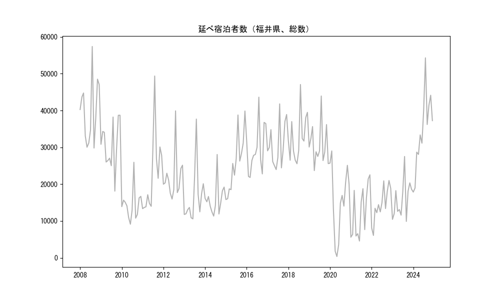
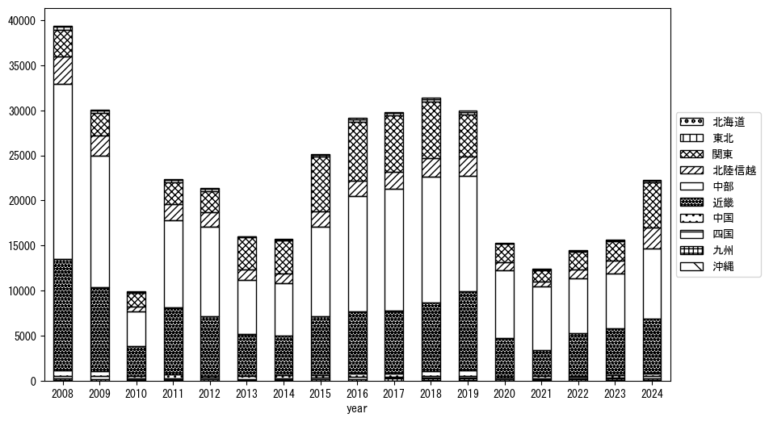
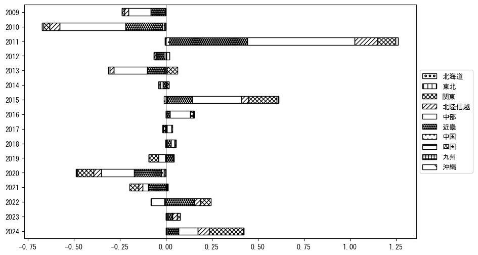
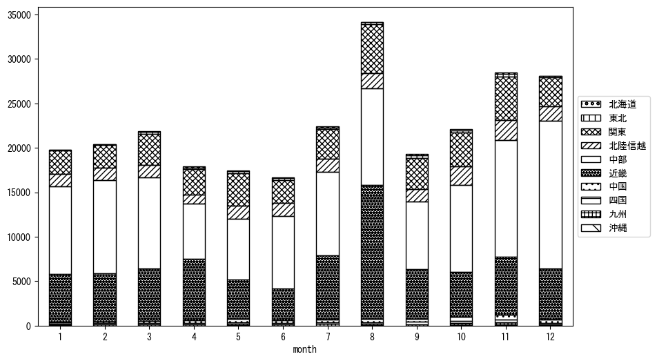
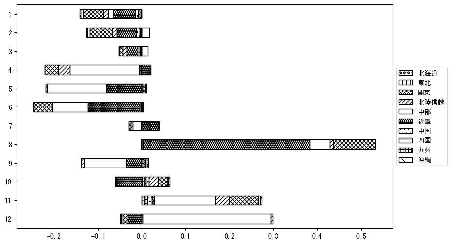

-
トップ
-
福井県
福井県
１．延べ宿泊者（総数）の推移
時系列グラフ

図１：福井県内の従業員数100人以上の宿泊施設での延べ宿泊者数（国外、居住地不詳を含む総数）。
基本統計量
表１：従業員数100人以上の宿泊施設での延べ宿泊者の総数（国外、および居住地不詳を含む）に関する基本統計量。単位は人泊。平均は１か月あたりの平均値を表す。図１に対応。
| 2008年 |
39,856 |
8,644 |
29,819 (9月) |
57,391 (8月) |
| 2009年 |
30,579 |
6,433 |
18,114 (9月) |
38,725 (12月) |
| 2010年 |
14,439 |
4,329 |
9,131 (6月) |
25,944 (8月) |
| 2011年 |
22,715 |
10,790 |
13,361 (1月) |
49,374 (8月) |
| 2012年 |
21,855 |
6,332 |
15,964 (6月) |
39,905 (8月) |
| 2013年 |
16,581 |
7,624 |
10,577 (6月) |
37,679 (8月) |
| 2014年 |
16,022 |
4,481 |
11,338 (6月) |
28,057 (8月) |
| 2015年 |
25,711 |
8,043 |
15,826 (1月) |
39,869 (12月) |
| 2016年 |
29,518 |
6,652 |
21,831 (3月) |
43,629 (8月) |
| 2017年 |
30,642 |
6,041 |
23,965 (6月) |
41,802 (8月) |
| 2018年 |
32,848 |
6,437 |
25,549 (6月) |
47,064 (8月) |
| 2019年 |
30,676 |
5,620 |
23,690 (4月) |
43,942 (8月) |
| 2020年 |
15,414 |
9,505 |
356 (5月) |
29,025 (2月) |
| 2021年 |
12,429 |
6,906 |
4,561 (6月) |
22,542 (12月) |
| 2022年 |
14,496 |
4,651 |
6,085 (2月) |
21,000 (11月) |
| 2023年 |
15,874 |
5,178 |
9,885 (9月) |
27,518 (8月) |
２．宿泊者数の重心（年平均の推移）
図２：福井県内の従業員数100人以上の宿泊施設での宿泊者数（国外、居住地不詳を除く）の重心（年平均の推移）。
全画面表示
重心の前年平均からの移動距離と方位、および緯度・経度
表２：重心の前年平均からの移動距離と方位、および緯度・経度。図２に対応。
| 2008年 |
— |
— |
35.5225 |
136.4558 |
| 2009年 |
南 |
1.2km |
35.5114 |
136.4557 |
| 2010年 |
東南東 |
30.6km |
35.4483 |
136.7840 |
| 2011年 |
西北西 |
16.3km |
35.4835 |
136.6095 |
| 2012年 |
北北西 |
8.7km |
35.5574 |
136.5786 |
| 2013年 |
東 |
36.0km |
35.5384 |
136.9746 |
| 2014年 |
南南西 |
5.0km |
35.4959 |
136.9549 |
| 2015年 |
東北東 |
10.1km |
35.5269 |
137.0595 |
| 2016年 |
北北西 |
9.0km |
35.5988 |
137.0140 |
| 2017年 |
西 |
8.7km |
35.5925 |
136.9181 |
| 2018年 |
西南西 |
4.4km |
35.5800 |
136.8722 |
| 2019年 |
西南西 |
18.9km |
35.5111 |
136.6818 |
| 2020年 |
北北西 |
4.1km |
35.5426 |
136.6585 |
| 2021年 |
西北西 |
15.7km |
35.5895 |
136.4947 |
| 2022年 |
南南東 |
19.6km |
35.4340 |
136.5966 |
| 2023年 |
南東 |
0.7km |
35.4292 |
136.6011 |
運輸局別延べ宿泊者数
時系列（年平均）

図３：福井県内の従業員数100人以上の宿泊施設での１か月あたり平均宿泊者数（国外、居住地不詳を除く）の運輸局別内訳。
寄与度（前年からの変化率に対する）

図４：福井県内の従業員数100人以上の宿泊施設での運輸局別宿泊者数（国外、居住地不詳を除く）から求めた寄与度。
３．宿泊者数の重心（月別）
図５：福井県内の従業員数100人以上の宿泊施設での宿泊者数（国外、居住地不詳を除く）の重心（月別）。観測期間は2008年1月から2023年12月まで。
全画面表示
全期間（2008年1月～2023年12月）の平均と月別平均の比較
表３：全期間の平均から月別平均までの移動距離と方位、および緯度・経度。図５に対応。
| 全期間 |
— |
— |
35.5226 |
136.7318 |
| 1月 |
西 |
8.3km |
35.5325 |
136.6412 |
| 2月 |
西 |
9.2km |
35.5196 |
136.6301 |
| 3月 |
東 |
9.5km |
35.5363 |
136.8354 |
| 4月 |
南南西 |
17.0km |
35.3939 |
136.6307 |
| 5月 |
東北東 |
17.7km |
35.5655 |
136.9195 |
| 6月 |
北 |
15.8km |
35.6639 |
136.7511 |
| 7月 |
南西 |
8.1km |
35.4721 |
136.6679 |
| 8月 |
南南西 |
26.1km |
35.2926 |
136.6694 |
| 9月 |
東 |
6.6km |
35.5261 |
136.8048 |
| 10月 |
北東 |
12.5km |
35.6052 |
136.8249 |
| 11月 |
東北東 |
8.2km |
35.5531 |
136.8143 |
| 12月 |
北西 |
16.0km |
35.6108 |
136.5927 |
運輸局別延べ宿泊者数
月別平均（2008年1月～2023年12月）

図６：福井県内の従業員数100人以上の宿泊施設での宿泊者数（国外、居住地不詳を除く）の運輸局別内訳（月別）。
寄与度（全期間の平均から月別平均への変化率に対する）

図７：福井県内の従業員数100人以上の宿泊施設での運輸局別宿泊者数（国外、居住地不詳を除く）から求めた寄与度（月別）。
４．データのダウンロード
出典：観光庁「宿泊旅行統計調査」に収録された「施設所在地、居住地別延べ宿泊者数（従業員数100人以上の施設）」
国土地理院「白地図（地理院タイル）」（図２と図５）